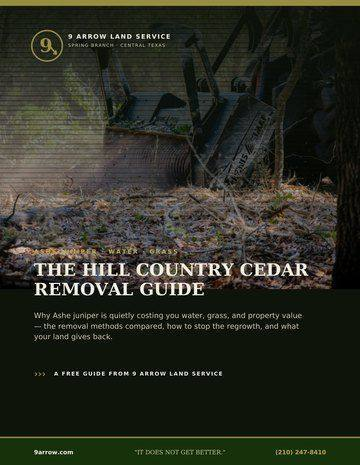

How to Clear Cedar So It Doesn't Grow Back
Good news for Hill Country landowners: unlike mesquite, Ashe juniper — what we all call cedar — does not re-sprout from the stump. If it's cut or mulched below its lowest green branch, that cedar is gone for good. Get that one detail right and the rest is just catching seedlings.
Does cedar grow back after you cut it?
Not if it's removed correctly. The Texas A&M Forest Service and rangeland specialists are clear on this: Ashe juniper has no ability to resprout once it's severed below the lowest living limb. The mistakes that cause "regrowth" are cutting too high (leaving green branches that keep the tree alive) and ignoring the seedlings that come up afterward.
The rule: take every cedar below its lowest green branch. Do that and it will not come back.
The right way to remove it
This is exactly why forestry mulching is the best tool for cedar. The mulcher grinds each tree right down at the base — below that critical lowest branch — so there's nothing left to regrow. It handles dense stands in a single pass, leaves the mulch as ground cover, and doesn't disturb the soil the way a dozer would. Learn more in our guide to reclaiming a ranch from cedar and mesquite.
Plan the follow-up pass
Even done perfectly, the seed already in your soil will sprout new cedar seedlings over the next couple of seasons. The fix is easy if you stay ahead of it:
- Walk the cleared area at 12 and 24 months.
- Knock down young seedlings while they're small — they pull or cut easily.
- Don't let any reach branching height again.
Protect your oaks and let the grass return
Before any work, flag the heritage oaks and shade trees you want to keep — selective mulching takes the cedar and leaves them. Once the cedar's gone, native grasses usually fill back in on their own as sunlight and water return to the ground. For ranchers across Comal County and the wider Hill Country, that's the whole payoff: grass, water, and walkable land.
Frequently asked questions
Does cedar grow back after clearing?
Ashe juniper (cedar) does not re-sprout from the stump if it's cut or mulched below its lowest green branch. Apparent regrowth comes from cutting too high or from new seedlings — not from the original tree coming back.
What's the best way to remove cedar permanently?
Forestry mulching grinds each cedar at the base, below the lowest live branch, so it can't regrow. It clears dense stands in one pass and leaves mulch behind, with no soil disturbance.
How do I stop cedar seedlings from coming back?
Walk the cleared area at 12 and 24 months and knock down young seedlings while they're small. Staying ahead of new growth for the first couple of years keeps the land open for good.

The Hill Country Cedar Removal Guide
Why Ashe juniper is costing you water and grass, the removal methods compared, and exactly how to stop it growing back.
Get the free guide (PDF)Instant PDF · sent to your inboxIt does not get better.
Ready to take your land back from the cedar?
We'll mulch it low, protect your oaks, and give the grass and water a chance to come back.
Request an Estimate